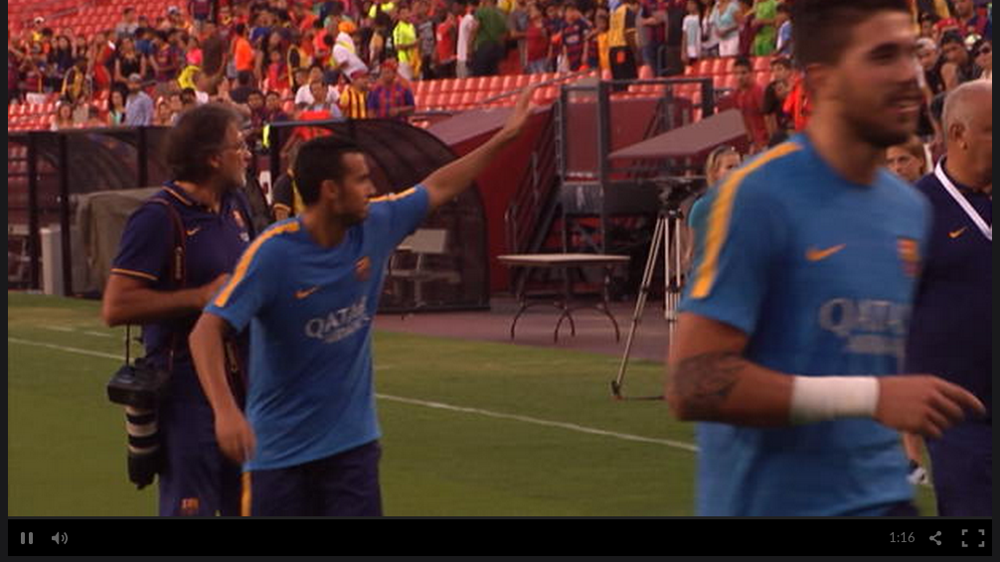
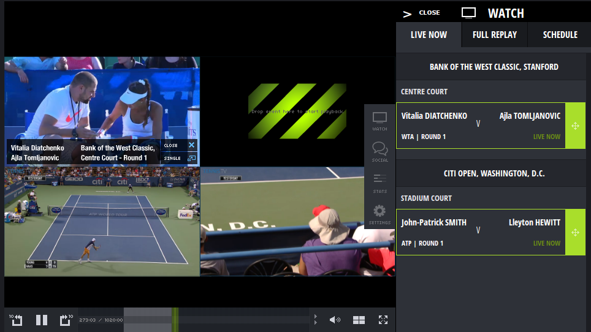
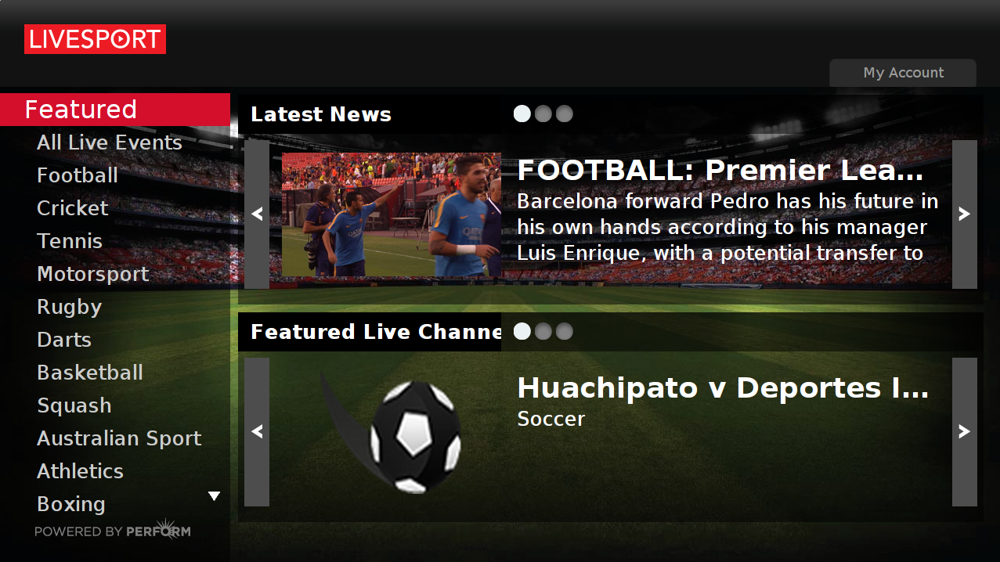
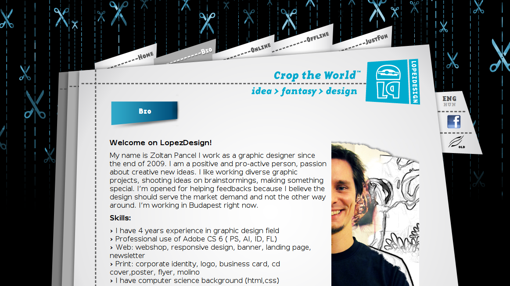
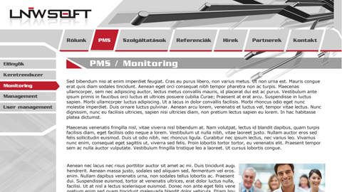
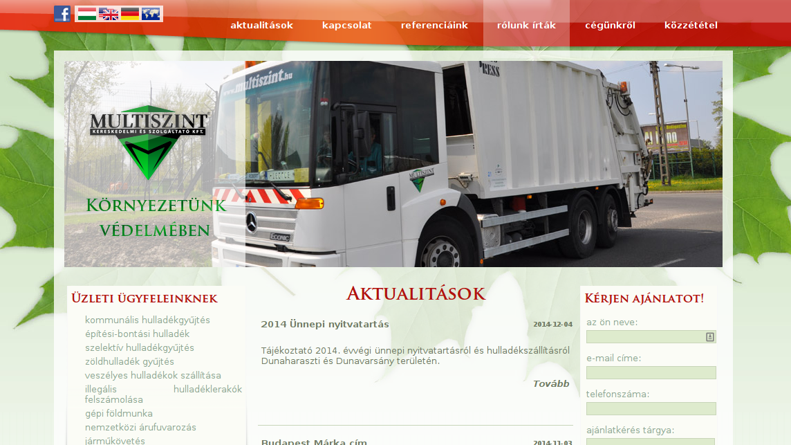

Andras Sevcsik
Senior Javascript Developer
sevcsik@sevdev.hu +36702915159 sevcsik sevdev.hu/~sevcsik linkedin.com/in/sevcsik sevcsik sevcsik @sevcsikSkillset and Experience
Frontend skills
- Javascript: senior
- HTML/CSS: senior
- AngularJS: experienced
- Polymer: experienced
- React: beginner
- IndexedDB: experienced
- WebSocket: beginner
- Grunt: experienced
- Gulp: experienced
- Optimisation: senior
- D3.js beginner
- Web Components experienced
- ECMAScript 2015 experienced
Backend skills
- Node.js: senior
- Haskell: beginner
- MongoDB: experienced
- Express: senior
- MySQL: experienced
- CouchDB: beginner
- AWS: experienced
- Linux: senior
- Functional Programming: experienced
- PHP: experienced
General skills
- CI: experienced
- Unit Testing: senior
- Continuous Deployment: experienced
- Git: experienced
- Subversion: beginner
- Agile: senior
- JIRA: experienced
Projects
node-couchdb-model (2014)
A simple CouchDB abstraction for Node.js, built on top of the nano project. It comes with a http middleware, which is useful to build REST APIs.
The project was developed as an open source project on Github, using the BDD methodology from the beginning.
Relevant Buzzwords
- Node.js
- BDD
- Karma
- Mocha
- Chai
- CouchDB
- Git
- NPM
- REST
- Promises
- open source
ePlayer (2014)
ePlayer is an embeddable, customisable video player to serve Perform Group's sports VOD content to various publishers.
I was assigned to start building the next generation of the product to replace the previous, Flash-based version. As a senior frontend developer, my responsibilities included to design the frontend architecture from the ground up, implement video advertisements from 3rd party, analytics, and to deliver a seamless user experience across devices of all form factors.
Relevant Buzzwords
- AngularJS
- REST
- Unit Testing
- Git
- Code Review
- Scrum
- Google Tag Manager
- VAST
- VPAID
- Release Management
- Frontend Optimisation
- MVC
TennisTV player (2013)
TennisTV is a subscribtion-based site dedicated to deliver live streams, fixtures of world-class tennis tournaments, such as WTA or ATP. The site features an advanced video player, which can display up to four streams nex to each other, display statistics and fixtures.
I was working on the TennisTV application as a frontend developer. I was responsible for planning the frontend architecture of the HTML component, implement interactions with the Flash component, analytics and the UI.
Relevant Buzzwords
- jQuery
- Omniture
- Release Management
- Subversion
- DVR Streaming
- Flash

Goal.com for SmartTV (2012)
Goal.com is a leading football website, delivering commentaries, news, fixtures and sports data. It's also present on Android, iOS, FirefoxOS, Samsung SmartHub, LG NetCast and WebOS.
I was working on the LG and Samsung SmartTV application as a frontend developer. I was responsible for building the UI, handle VOD playback, advertisements and analytics.
Relevant Buzzwords
- jQuery
- Single-page Application
- MVC
- Omniture
- Keyboard navigation
- Release Management
- Subversion
- VAST
- REST
Livesport for SmartTV (2012)
Livesport is a sports live streaming service, offering dozens of different sports.
I was working on the LG and Samsung SmartTV application as a frontend developer. I was responsible for implementing analytics and maintaining the application.
Relevant Buzzwords
- jQuery
- Single-page Application
- Omniture
- Keyboard navigation
- Release Management
- Subversion
- VAST
- HTTP Live Streaming
LopezDesign (2011)
LopezDesign.hu is the portfolio website for my former designer colleguae, Zoltan "Lopez" Pancel built on Wordpress. The site utilises many CSS3 features: transitions, transformations and webfonts, and available in two languages.
Relevant Buzzwords
- Wordpress
- PHP
- CSS3
- Webfonts
- jQuery
- Internationalization
LNWSoft Website (2011)
LNWSoft was a corporate website built on Wordpress. It featured state of the art CSS3 features, such as custom fonts, transitions and transformations. It was powered by a custom-built, highly customisable Wordpress theme.
Relevant Buzzwords
- Wordpress
- PHP
- CSS3
- Webfonts
- jQuery
Multiszint (2009)
Corporate website of a Hungarian waste transport company. This was my first professional project. The site is powered by a custom-build LAMP backend, which features a WYSIWYG editor tailored for different sections, and a contact form. Implemented in vanilla JS.
Relevant Buzzwords
- MySQL
- PHP
- CSS3
- Webfonts
- Internationalization
- SEO
- WYSIWYG
- CAPTCHA
Education & Career
- 1990 - Born in Budapest, Hungary ( Near the hearth chakra of planet Earth )
- 2009 - Finished high school ( Puskas Tivadar Telecommunications High School )
- 2009- - Freelancer career ( Full-stack Web Developer )
- 2011 - Kupon Vilag ( Web Developer (PHP) )
- 2012- - Perform Group ( Senior Frontend Developer )
- 2014- - ScreamingBox ( Senior Full-stack Web Developer )